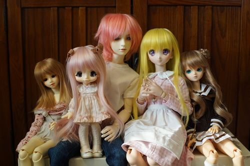

- Olivia and Sophie
- Bambicrony Elf Charity Tan
- Body: BC Type 2
- Faceup: BC default (Harang)
- Olivia order date: 2/22/2009
- 03/27/2009 & 11/04/2009
- Olivia - first owner, Sophie - second owner
around 2007-2008 I was super interested in visual kei. I spent my days dreaming of miyavi and gackt and searching deviantart and other online art communities for whatever inspired me. i came across this photo on deviantart while searching for vkei. i was just a little smitten. july 23, 2008 was the day I discovered DOD Ducan and the beginning of the end.
i spent the next few years mopping floors, collecting christmas and birthday money, and doing anything I could to buy dolls. I was lucky to be in a pretty good situation where after a few months I was able to afford my first doll. My mom was very supportive of me getting cute girl dolls (not so much the boys) and helped me a lot. not everyone is so lucky!
thank you to all my doll comm for spending time with me over the first years! Rei, Jenn, Bri, I miss you all so much! and thank you to Amanda for listening to me obsess over them for more than a couple years! also sorry for getting you into an expensive hobby :p
I made this because i'm always sad when i cant figure out what doll sculpt someone is posting so here is an easy guide so you can check my dolls out fast.
click the date links in each profile to view box opening photos! they were all originally posted on DoA with some (probably) embarrassing comments but those have been deleted now. luckily you can still witness my old box openings without the musings of a teen attached.
the first doll i ever bought! he's named after Rio by Duran Duran
he's very much an impulse buy. i'm not sure why i wanted him other than him being limited. his head is so tiny on his 70cm body and it looks so goofy. big wigs really help hide that. his face though is so cute and sweet it doesnt match the muscles at all!! if it was at all possible for me to get him a DOT body, i'd be all for it! unfortunately I'll never find a tan to match
i've tried to sell him a few times. every time i hold him though im happy i didnt. ive had so many fun memories with this doll! he definitely deserves some new clothes and wigs after all these years
sophie belongs to my mom but these two stick together always.
I went to a doll meetup and saw my friend Rei's tan Bambicrony Kumi. she was just so cute that i went home and impulsively ordered my own tan bambicrony girl exactly 8 days later!
Sophie was bought from a DoA user whose name may be lost to time. she was having some health issues and needed the money badly, so i sheepishly offered a very low price because that was what my mom said she would be willing to spend. the seller accepted the offer to my surprise and we brought sophie home. i feel bad about how much we offered her and I hope she's doing okay.
Between me and my mom, we own 10% of this model limited to 20 worldwide. their faceups are just slightly different with olivia looking a little spicier than the softer sophie.

I think i was a little too obsessed with sacha baron-cohen at the time. if I get him a body he might get a new less embarrassing name.
I bought him because I liked migidoll ryu. He is my lesson in "don't settle". He's still a beautiful boy though and i want to get him a body since I dont really intend to sell him at the moment. I wouldn't be able to prove his legitimacy anyway at this point. He's so old that everyone would be nervous to buy him.
His first owner (afaik) was Fayth, who I bought him from on DoA. He may have been purchased through a group order with his faceup artist Meeve in 2007.
my baby face SD sized boy! so cute! he's named after the location of Romeo and Juliet. i had some money burning a hole in my pocket around the holiday event time and iplehouse had all their limited real skin dolls up for sale.
his resin is slightly translucent and has really sold me on french resin. he hasnt had any of the awful yellowing issues that french resin has. i dont love tan dolls, but I also wouldnt call this color actual tan and i think it's quite lovely!
this doll has a character i'd rather not talk about. hazukashi...
I don't have too much to say about her other than she fits my mom's tastes better than my own. She has a very sweet face and the best engineered doll body I own.

guess who looked at hiritai's hayden too long? this b*tch.
I didn't know this head was modded until I'd had the doll for 10 years. He was purchased from DoA user Circe-Nausicca. The body is possibly from a split in November 2009, but I wasn't able to confirm this info.
this doll has a character i'd rather not talk about. it's about what'd you expect from a teenage fujoshi
he should have dark brown red-tinted hair but I never actually got around to buying him that wig. his creepily light blue eyes are intentional, but i do think he deserves a higher quality pair. i also think he should big bigger and taller than verona, so i would like to get him a bigger body. i honestly don't know if he matches lati or volks WS so uhhh... not that his iplehouse body matches his head anyway.
sochi is my next soul vessel. please do not buy her unless you want a doll haunted by me. she is named after the then future location of the olympics. I was a little obsessed with male figure skaters at the time i got her.
whenever i look at her, i think "i love her. i love her. she is the one for me". im obsessed.
she has no box opening photos because there was no box opening. my friend had her listed for sale and just brought me the pieces at a meetup and i put her together before paying for her.
she is spoiled. i have more wigs and clothes in her size than i do for any other dolls despite only having one doll in her size. she is my favorite.
I bought her from my local comm member (and good friend) reichiere. She had recieved a Sarang with blossom body in a trade in early 2010 and taken the body for her own Xiao. I cannot find her previous owner! Sochi's old name may have been Viola. She had purchased her Xiao secondhand from DoA user Pia in 2006, who was the first owner and lived in Australia! My little world traveller! The body of her Xiao was put on sale with the Sarang head, and I snatched her up! Her head is lighter than her body even though they're both around the same age. She is my 2nd oldest doll age wise.

The yosd sized version of TF Sarang. good investment!
this doll was sold as a girl, but the owner offered me a refund of $50 when she noticed it was a boy body so i totally took it. was my cheapest doll at ~$100
Her history is a bit complicated too! I bought a blank shinyfairy hana girl from DoA user Pomegranate, who was the first owner. Upon wrapping her up, she noticed the body was a boy body instead and asked me if I still wanted it. I can't blame her for noticing... I didn't even notice in the sales photo. I did a faceup for her that wasn't awesome or anything.
My friend reichiere also had a SF Hana. Her Hana was originally purchased by Squishtaru, who also did the faceup. In July 2010, GoroChaggi bought her. In November 2010, Rei traded for her. Rei wanted a more natural faceup, so offered to trade me heads, which I took with a lot of guilt!
at pnw bbq expo, bluefairy was a vendor. the man working at the booth confirmed to us that both of our Hanas were the first version, and that hana 1.0 looked the most like sarang.
she is my oldest (and most beautifully sculpted) doll! i believe she was cast in 2005 since her box came with B-El and L-bi faceplates. my darling had to wait 8 years to be put be put together.
it's too bad kits aren't sold anymore. she was incredibly fun to assemble!
because I assembled her myself, she is the doll I am most proud of. u go girl. she still doesn't have a name because i am awful. this doesnt mean i love her any less. she is one of my favorites.

i'm not sure everyone can say they bought a volks doll on sale directly from volksUSA, but i can! i bought her body during the LA showroom closing sale.
i met and talked to subaru for a while when she had $15 faceup commissions so i had her paint me a 06 head. Her red eyes were even made by subaru herself! she gave them to me at AX 2017 ;u; thank you!
I LOVE that i can leave her out without worrying about yellowing resin, but vinyl dolls are not good to be hugged. i'm also worried about staining so she only gets to wear light colors. i also hate fist hands now. i will never buy fist hands again. so unexpressive and limiting!

not a "grail" but defintely a doll ive been wanting since i first saw her. i entered the lieselotte 2nd lottery but didnt win (i didnt have the money anyway). never had a chance to buy her until i was out of school with an income and got a stimulus check i didnt know what to do with
i never expected to ever get the chance to buy her directly from volks (and for the original price) so I am incredibly happy to have had this opportunity. the wait is killing me! but i know shes coming so i must be patient! I already bought her an antique travel box to live in, made her pillows for it, and decided on her name (to combat the fact I havent been original enough to name a doll in over 10 years)
she was a birthday gift from my dear mommy. i am so grateful that kinoko juice worked with azone to make their dolls easily accessible!
her hands keep falling off and it's nerve-wracking to bring her outside. she stole one of sochi's (multiple) wigs and sochi is not getting that wig back. the wig that came with kikipop is shiny and crappy tbh.
i always call her "kikipop". my apologies for not getting more creative.
fun fact she stood without a stand through a small earthquake
baby jesus was given to me when my sister was born!
my mom gave me this doll and i couldnt understand why someone would spend over $100 on a doll. look where i am now. she has smudges on her face because it looks like i faceplanted her on a newspaper or something and the vinyl picked up the dye
strikingly beautiful!! what a lovely girl!
i first encountered her in a consignment shop Nov 22 2020 and took a picture of her. somehow she made it to a thrift store in the same town and i found her there. i refuse to believe this isnt fate!
i'm not really into selling dolls but here are my exceptions
i admit i did try to sell almost all of my dolls at one point, but now i feel like i can just make more money if i want other dolls. i am thankful almost all of my previous dolls never found buyers. i've had so many memories with them that i would be sad to not have them now
I wanted a doll to play with, so i bought one. came to me with uneven yellowing. obviously DDE had left this one on display for a while and the front of it was a slightly different color than the back. i will never buy from DDE again.
i sanded his chest down, gave him a few different faceups and had a good bit of fun with him. He was even visual kei for a while!
the sculpt quality wasnt up to my standards though. the body was just awful compared to my other dolls. nothing about the face stuck out to me either. just a plain doll.
i dont regret buying him or selling him. i gave him a nice girly faceup before sending him off to a new home
i did that thing where i put my name in a hat or something at a bbq expo and they actually pulled it out!
i was off hanging out with Ryan when i got a text from my friend to hurry back to the convention center and there they presented me with... mirodoll mika!!!
excuse me while i look a gift horse in the mouth for an honest review: this doll is sh*t. it cant stand, all the joints are like ????? its just not a good doll at all. spend your money on something better
i gifted this doll to tae on the terms that it cannot be sold, only gifted. i unstrung her for the trip to AX and found out she had been put together with exactly ONE s hook (in her head). im not sure tae ever got her strung tbh... it'd be a difficult one to string even as a bjd veteran (can i say that yet?)